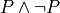

9. Propositional Logic¶
A logic is a system for writing, evaluating, and reasoning about truth statements, or propositions. A proposition asserts that some state of affairs holds in some domain. Truth statements can be particular: e.g., Tom’s mom is Mary; or general: e.g., Every person has a mother.
In Dafny, a logical language is used to express states of affairs in programs, that are required or asserted to hold. A simple example is a proposition that some variable has a value that is greater than 0. When used for program specification and verification, propositions are taken as descriptions of states of affairs that are required to hold, and that Dafny assures must hold before a program can be run.
Dafny is a programming system with an expressive logic, which means that many useful conditions can be expressed using it. Dafny’s logic is called first-order logic. In addition to providing an expressive logical language, Dafny also provides automated and often efficient tools for enforcing the truth of propositions about programs. Dafny requires programmers to change either programs or specifications until the former satisfy the latter.
In practice, programmers sometimes make pragmatic compromises by weaking specifications until satisfaction can readilt be proved. But this approach casts the validity of the specifications into question and opens a possibility that a program will satisfy its specification without satisfy the actual requirements for the system.
Of course logic has far broader applications in computer science than just in program specification and verification. It is also central to many artificial intelligence (AI) systems, optimization systems (e.g., for finding good travel routes), in the development and analysis of algorithms, in verification of the functionality of hardware circuits in digital logic design, and in many other fields.
Up until now in this course, you have seen one compelling application of mechanized logic in programming, for program specification and verification. Having shown one compelling use case for logic in practical computing, we now start a deeper dive to understand logic and formal reasoning more generally.
Propositional Logic¶
In this chapter and the next, we explore a simple, useful logic called propositional logic. This is a logic in which the basic elements are atomic propositions–that can be broken down no further– that can be taken to be either true or false, and in which propositions can be composed into larger propositions using logical connectives, such as and, or, not, and implies.
For example, atomic propositions might be (1) it is raining, (2) the streets are wet. If one considers all possible worlds, then in some of them, each proposition is sometimes true and sometimes false. A larger proposition, a formula, can be formed by combining these (basic) propositions into a larger one: it is raining implies the streets are wet. Another way to say this in English would be, whever it is raining, the streets are wet. This larger proposition is true in some but not all possible worlds. If it’s not raining, the proposition correctly describes the world whether the streets are wet or not, and so is judged to be true. If it is raining and the streets are wet, it also correctly describes the world, and so is judged to be world is consistent with the proposition whether the streets are wet or not. Only in a world in which it is raining and the streets are dry does the proposition fail to correctly describe the state of affairs, and so in this world, it’s judged to be false.
There are many forms of logic, but they all share three basic elements: syntax, semantics, and reasoning principles.
Syntax of Propositional Logic¶
A logic provides a formal language in which propositions (truth statements) are expressed. By a formal language, we mean a (usually infinite) set of valid expressions in the language. For example, the language of Boolean expressions includes the expression true and false but not and or true not.
When the set of valid expressions in a language is infinite in size, it becomes impossible to define the language by simply listing all valid expressions. Instead, the set of valid expressions is usually defined inductively by a grammar. A grammar defines a set of elementary expressions along with a set of rules for forming ever larger expressions from ones already known to be in the language. We also call the grammar for a formal language its syntax.
The syntax of proposition logic is very simple. First, (with details that vary among presentations of propositional logic), it accepts two literal values, usually called true and false, as expressions. Here we will call these values pFalse and pTrue to emphasize that these are expressions that we will eventually interpret as having particular Boolean values (namely false and true, respectively).
Second, propositional logic assumes an infinite set of propositional variables, each represents a proposition, and each on its own a valid expression. For example, the variable, X, might represent the basic proposition, “It is raining outside,” and Y, that “The streets are wet.” Such variables should be understood as being equated with basic propositions. Instead of the identifier, X, one might just as well have used the identifier, it_is_raining_outside, and for Y, the identifier, the_streets_are_wet.
Finally, in addition to literal values and propositional variables, propositional logic provides the basic Boolean connectives to build larger propositions from smaller ones. So, for example, X and Y, X or Y, and not X are propositions constructed by the use of these logical connectives. So is (X or Y) and (not X). (Note that here we have included parentheses to indicate grouping. We will gloss over the parentheses as part of the syntax of propositional logic.)
We have thus defined the entire syntax of propositional logic. We can be more precise about the grammar, or syntax, of the language by giving a more formal set of rules for forming expressions.
This kind of specification of a grammar, or syntax, is said to be in Backus-Naur Form” or BNF, after the names of two researchers who were instrumental in developing the theory of programming languages. (Every programming language has such a grammar.) This particular BNF grammar reads as follows. A legal expression is either a literal expression, a variable expression, or a compound expression. A literal expression, in turn, is either true or false; a variable expression is X, Y, Z, or another variable one might wish to employ; and, finally, if one already has an expression or two, one can form a larger expression by putting the *Not connective in front of one, or an And or Or connective in front of two smaller expressions. That’s it!
This kind of definition is what we call an inductive definition. The set of legal expressions is defined in part in terms of expressions! It’s like recursion. What makes it work is that one starts with some non-recursive base values, and then the inductive rules allow them to be put together into ever larger expressions. Thinking in reverse, one can always take a large expression and break it into parts, using recursion until base cases are reached.
Semantics of Propositional Logic¶
Second, a logic defines a of what is required for a proposition to be judged true. This definition constitutes what we call the semantics of the language. The semantics of a logic given meaning to what are otherwise abstract mathematical expressions; and do so in particular by explaining when a given proposition is true or not true.
The semantics of propositional logic is very simple. The literal expressions, pTrue and pFalse always mean Boolean true and false, respectively. A variable can have either the value, true or the value, false. The value of any particular variable is given by a function from variables to Boolean values called an interpretation. The meaning of a variable expression is just the Boolean value it has when given as an argument to the interpretation function. Finally, an an expression of the form pAnd e1 e2, pOr e1 e2, or pNot e has a value obtained by applying the corresponding Boolean operators to the Boolean values of the smaller expressions, e, e1, and e2. Evaluation of a larger expression is done by recursively evaluating smaller expressions until the base cases of pTrue and pFalse are reached.
Later in this chapter we’ll make all of these ideas completley precise by seeing how they can actually be implemented in Dafny.
Exercise: Write a valid expression in propositional logic representing the idea that either it is not raining outside or the streets are wet.
Exercise: Extend the syntax above to include an implies connective and express the proposition from the previous exercise using it.
Inference Rules for Propositional Logic¶
Finally, a logic provides a set of inference rules for deriving new propositions (conclusions) from given propositions (premises) in ways that guarantee that if the premises are true, the conclusions will be, too. The crucial characteristic of inference rules is that although they are guarantee to preserve meaning (in the form of truthfulness of propositions), they work entirely at the level of syntax.
Each such rule basically says, “if you have a set of premises with certain syntactic structures, then you can combine them in ways to derive new propositions with absolute certainty that, if the premises are true, the conclusion will be, too. Inference rules are thus rules for transforming syntax in ways that are semantically sound. They allow one to derive meaningful new conclusions without ever having to think about meaning at all.
These ideas bring us to the concept of proofs in deductive logic. If one is given a proposition that is not yet known to be true or not, and a set of premises known or assumed to be true, a proof is simply a set of applications of availabile inference rules in a way that, step by step, connects the premises syntactically to the conclusion.
A key property of such a proof is that it can be checked mechanically, without any consideration of semantics (meaning) to determine if it is a valid proof or not. It is a simple matter at each step to check whether a given inference rule was applied correctly to convert one collection of propositions into another, and thus to check whether chains of inference rules properly connect premises to conclusions.
For example, a simple inference rule called modus ponens states that if P and Q are propositions and if one has as premises that (1) P is true*, and (2) if P is true then Q is true, then one can deduce that Q is true. This rule is applicable no matter what the propositions P and Q are. It thus encodes a general rule of sound reasoning.
A logic enables semantically sound “reasoning” by way of syntactic transformations alone. And a wonderful thing about syntax is that it is relatively easy to mechanize with software. What this means is that we can implement systems that can reasoning meaningfully based on syntactic transformation rules alone.
Note: Modern logic initially developed by Frege as a ” formula language for pure though,t modeled on that of arithmetic,” and later elaborated by Russel, Peano, and others as a language in which, in turn, to establish completely formal foundations for mathematics.
Using Logic in Practice¶
To use a logic for practical purposes, one must (1) understand how to represent states of affairs in the domain of discourse of interest as expressions in the logical language of the logic, and (2) havee some means of evaluating the truth values of the resulting expressions. In Dafny, one must understand the logical language in which assertions and related constructs (such as pre- and post-conditions) are written.
In many cases–the magic of an automated verifier such as Dafny–a programmer can rely on Dafny to evaluate truth values of assertions automatically. When Dafny is unable to verify the truth of a claim, however, the programmer will also have to understand something about the way that truth is ascertained in the logic, so as to be able to provide Dafny with the help it might need to be able to complete its verification task.
In this chapter, we take a major step toward understanding logic and proofs by introducing the language propositional logic and a means of evaluating the truth of any sentence in the language. The language is closely related to the language of Boolean expressions introduced in the last chapter. The main syntactic difference is that we add a notion of propositional variables. We will defined the semantics of this language by introducing the concept of an interpration, which specifies a Boolean truth value for each such variable. We will then evaluate the truth value of an expression given an interpration for the proposition variables in that expression by replacing each of the variables with its corresponding Boolean value and then using our Boolean expression evaluator to determing the truth value of the expression.
We will also note that this formulation gives rise to an important new set of logical problems. Given an expression, does there exist an interpretation that makes that expression evaluate to true? Do all interpretations make it value to true? Can it be there there are no interpretations that make a given expression evaluate to true? And, finally, are there efficient algorithms for deciding whether or not the answer to any such question is yes or no.
Implementing Propositional Logic¶
The rest of this chapter illustrates and further develops these ideas using Boolean algebra, and a language of Boolean expressions, as a case study in precise definition of the syntax (expression structure) and semantics (expression evaluation) of a simple formal language: of Boolean expressions containing Boolean variables.
To illustrate the potential utility of this language and its semantics we will define three related decision problems. A decision problem is a kind of problem for which there is an algorithm that can solve any instance of the problem. The three decision problems we will study start with a Boolean expression, one that can contain variables, and ask where there is an assignment of true and false values to the variables in the expression to make the overall expression evaluate to true.
Here’s an example. Suppose you’re given the Boolean expression,
 . The top-level operator is
and. The whole expression thus evaluates to true if and only if
both subexpressions do:
. The top-level operator is
and. The whole expression thus evaluates to true if and only if
both subexpressions do:  and
and  , respectively. The first, , evaluates to true
if either of the variables, P and Q, are set to true. The second
evaluates to true if and only if the variable R is false. There are
thus settings of the variables that make the formula true. In each of
them, R is false, and either or both of P and Q are set to
true.
, respectively. The first, , evaluates to true
if either of the variables, P and Q, are set to true. The second
evaluates to true if and only if the variable R is false. There are
thus settings of the variables that make the formula true. In each of
them, R is false, and either or both of P and Q are set to
true.
Given a Boolean expression with variables, an interpretation for that expression is a binding of the variables in that expression to corresponding Boolean values. A Boolean expression with no variables is like a proposition: it is true or false on its own. An expression with one or more variables will be true or false depending on how the variables are used in the expression.
An interpretation that makes such a formula true is called a model. The problem of finding a model is called, naturally enough, the model finding problem, and the problem of finding all models that make a Boolean expression true, the model enumeration or model counting problem.
The first major decision problem that we identify is, for any given
Boolean expression, to determine whether it is satisfiable. That is,
is there at least one interpretation (assignment of truth values to
the variables in the expression that makes the expression evaluate to
true? We saw, for example, that the expression,  is satifiable, and, moreover, that
is satifiable, and, moreover, that  is a (one of three) interpretations
that makes the expression true.
is a (one of three) interpretations
that makes the expression true.
Such an interpretation is called a model. The problem of finding a model (if there is one), and thereby showing that an expression is satisfiable, is naturally enough called the* model finding* problem.
A second problem is to determine whether a Boolean expression is
valid. An expression is valid if every interpretation makes the
expression true. For example, the Boolean expression  is always true. If P is set to true, the formula becomes
is always true. If P is set to true, the formula becomes
 . If P is set to false, the formula is then
. Those are the only two interpretations and
under either of them, the resulting expression evaluates to true.
. If P is set to false, the formula is then
. Those are the only two interpretations and
under either of them, the resulting expression evaluates to true.
A third related problem is to determine whether a Boolean expression is it unsatisfiable? This case occurs when there is no combination of variable values makes the expression true. The expression  is unsatisfiable, for example. There is no value of $P$ (either true or false) that makes the resulting formula true.
These decision problems are all solvable. There are algorithms that in
a finite number of steps can determine answers to all of them. In the
worst case, one need only look at all possible combinations of true
and false values for each of the (finite number of) variables in an
expression. If there are n variables, that is at most  combinations of such values. Checking the value of an expression for
each of these interpretations will determine whether it’s satisfiable,
unsatisfiable, or valid. In this chapter, we will see how these ideas
can be translated into runnable code.
combinations of such values. Checking the value of an expression for
each of these interpretations will determine whether it’s satisfiable,
unsatisfiable, or valid. In this chapter, we will see how these ideas
can be translated into runnable code.
The much more interesting question is whether there is a fundamentally more efficient approach than checking all possible interpretations: an approach with a cost that increases exponentially in the number of variables in an expression. This is the greatest open question in all of computer science, and one of the greatest open questions in all of mathematics.
So let’s see how it all works. The rest of this chapter first defines a syntax for Boolean expressions. Then it defines a semantics in the form of a procedure for evaluating any given Boolean expression given a corresponding interpretation, i.e., a mapping from variables in the expression to corresponding Boolean values. Next we define a procedure that, for any given set of Boolean variables, computes and returns a list of all interpretations. We also define a procedure that, given any Boolean expression returns the set of variables in the expression. For ths set we calculate the set of all interpretations. Finally, by evaluating the expression on each such interpretation, we decide whether the expression is satisfiable, unsatisfiable, or valid.
Along the way, we will meet inductive definitions as a fundamental approach to concisely specifying languages with a potentially infinite number of expressions, and the match expression for dealing with values of inductively defined types. We will also see uses of several of Dafny’s built-in abstract data types, including sets, sequences, and maps. So let’s get going.
Syntax¶
Any basic introduction to programming will have made it clear that there is an infinite set of Boolean expressions. First, we can take the Boolean values, true and false, as literal expressions. Second, we can take Boolean variables, such as P or Q, as a Boolean variable expressions. Finally, we take take each Boolean operator as having an associated expression constructor that takes one or more smaller Boolean expressions as arguments.
Notice that in this last step, we introduced the idea of constructing
larger Boolean expressions out of smaller ones. We are thus defining
the set of all Boolean expressions inductively. For example, if P
is a Boolean variable expression, then we can construct a valid larger
expression,  to express the conjunction of the
value of P (whatever it might be( with the value, true. From here
we could build the larger expression, P lor (P land true), and so
on, ad infinitum.
to express the conjunction of the
value of P (whatever it might be( with the value, true. From here
we could build the larger expression, P lor (P land true), and so
on, ad infinitum.
We define an infinite set of “variables” as terms of the form mkVar(s), where s, astring, represents the name of the variable. The term mkVar(“P”), for example, is our way of writing “the var named P.”
datatype Bvar = mkVar(name: string)
Here’s the definition of the syntax:
datatype Bexp =
litExp (b: bool) |
varExp (v: Bvar) |
notExp (e: Bexp) |
andExp (e1: Bexp, e2: Bexp) |
orExp (e1: Bexp, e2: Bexp)
Boolean expresions, as we’ve defined them here, are like propositions with paramaters. The parameters are the variables. Depending on how we assign them true and false values, the overall proposition might be rendered true or false.
Interpretation¶
Evaluate a Boolean expression in a given environment. The recursive structure of this algorithm reflects the inductive structure of the expressions we’ve defined.
type interp = map<Bvar, bool>
Semantics¶
function method Beval(e: Bexp, i: interp): (r: bool)
{
match e
{
case litExp(b: bool) => b
case varExp(v: Bvar) => lookup(v,i)
case notExp(e1: Bexp) => !Beval(e1,i)
case andExp(e1, e2) => Beval(e1,i) && Beval(e2, i)
case orExp(e1, e2) => Beval(e1, i) || Beval(e2, i)
}
}
}
Lookup value of given variable, v, in a given interpretation, i. If there is not value for v in i, then just return false. This is not a great design, in that a return of false could mean one of two things, and it’s ambiguous: either the value of the variable really is false, or it’s undefined. For now, though, it’s good enough to illustate our main points.
function method lookup(v: Bvar, i: interp): bool
{
if (v in i) then i[v]
else false
}
Now that we know the basic values and operations of Boolean algebra, we can be precise about the forms of and valid ways of transforming Boolean expressions. For example, we’ve seen that we can transform the expression true and true into true. But what about true and ((false xor true) or (not (false implies true)))?
To make sense of such expressions, we need to define what it means for one to be well formed, and how to evaluate any such well formed expressions by transforming it repeatedly into simpler forms but in ways that preserve its meaning until we reach a single Boolean value.
Models¶
Satisfiability, Validity¶
We can now characterize the most important open question (unsolved mathematical problem) in computer science. Is there an efficient algorithm for determining whether any given Boolean formula is satisfiable?
whether there is a combination of Boolean
variable values that makes any given Boolean expression true is the
most important unsolved problem in computer science. We currently do
not know of a solution that with runtime complexity that is better
than exponential the number of variables in an expression. It’s easy
to determine whether an assignment of values to variables does the
trick: just evaluate the expression with those values for the
variables. But finding such a combination today requires, for the
hardest of these problems, trying all :math:2^n combinations of
Boolean values for n variables.
At the same time, we do not know that there is not a more efficient algorithm. Many experts would bet that there isn’t one, but until we know for sure, there is a tantalizing possibility that someone someday will find an efficient decision procedure for Boolean satisfiability.
To close this exploration of computational complexity theory, we’ll just note that we solved an instances of another related problem: not only to determine whether there is at least one (whether there exists) at least one combination of variable values that makes the expression true, but further determining how many different ways there are to do it.
Researchers and advanced practitioners of logic and computation sometimes use the word model to refer to a combination of variable values that makes an expression true. The problem of finding a Boolean expression that satisfies a Boolean formula is thus somtetimes called the model finding problem. By contrast, the problem of determining how many ways there are to satisfy a Boolean expression is called the model counting problem.
Solutions to these problems have a vast array of practical uses. As one still example, many logic puzzles can be represented as Boolean expressions, and a model finder can be used to determine whether there are any “solutions”, if so, what one solution is.
Logical Consequence¶
Finally, logic consequence. A set of logical propositions, premises, is said to entail another, a conclusion, if in every interpretation where all of the premises are true the conclusion is also true. See the file, consequence.dfy, for a consequence checker that works by exhaustive checking of all interpretations. <More to come>.